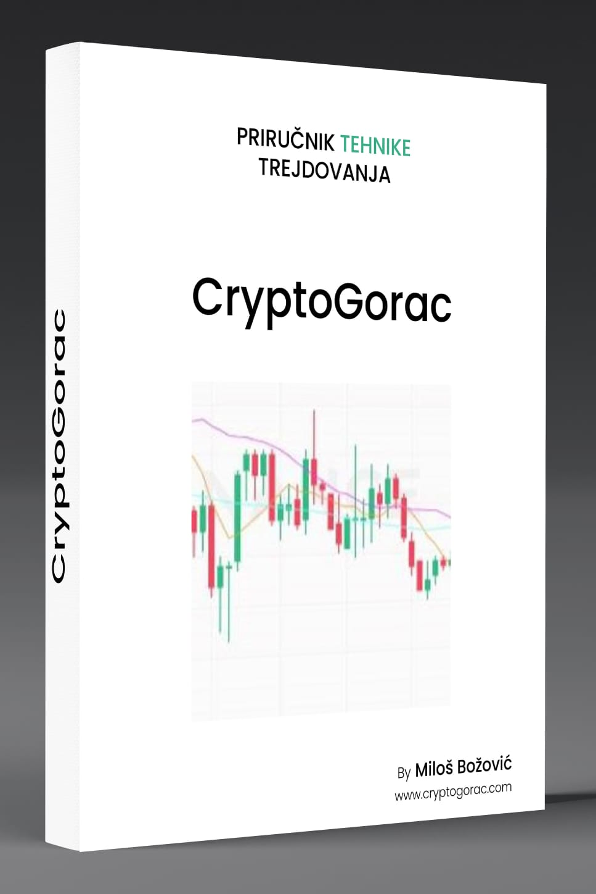

Tehnike trejdovanja
Tehnike trejdovanja
Priručnike možete naručiti odmah putem društvenih mreža.
Tehnike trejdovanja
Uvod
Dobrodošli u priručnik “Tehnike trejdovanja, CRYPYOGORAC ”. U svetu digitalnih valuta, trejdovanje kriptovalutama postaje sve popularnije i privlači pažnju kako iskusnih investitora, tako i onih koji tek ulaze u svet finansija.Analiza tržista
Fundamentalna analiza
Fundamentalna analiza je metodologija koja se koristi za procenu stvarne vrednosti finansijskog instrumenta, kao što su akcije, obveznice ili kriptovalute, na osnovu analize ekonomskih, finansijskih i drugih kvalitativnih i kvantitativnih faktora. Evo kako se fundamentalna analiza primenjuje u kontekstu trejdovanja kriptovalutama:
1.Analiza tima i celnih ljudi
Iskustvo i stručnost: Proverite relevantno iskustvo i stručnost članova tima. Da li su radili na sličnim projektima? Da li imaju uspešne projekte iza sebe, koliko su cijenjeni u kripto zajednici!?
Prisustvo na mrežama: Aktivnost na poslovnim mrežama kao što su LinkedIn i X-nekadasnji Tweeter može pružiti uvid u angažman tima u zajednici i tehnologiji (pazljivo provjeriti ispravnost naloga-profila).
2.Whitepaper i poslovni planovi
Whitepaper: Ovo je dokument koji detaljno opisuje projekat, njegovu svrhu, tehnologiju, plan razvoja i način na koji će rešiti određeni problem. Kvalitetan whitepaper je ključan za procenu ozbiljnosti projekta.
Poslovni plan: Analizirajte poslovni plan projekta. Da li je realan i ostvariv? Da li su ciljevi jasno definisani?
3.Tehnologija i inovacije
Tehnološka osnova: Procenite tehnologiju koja stoji iza kriptovalute. Da li je inovativna? Da li rešava stvarne probleme? I kako na nju gledaju i komentarisu strucnjaci.
Razvojni tim: Da li tim ima dovoljno stručnjaka za razvoj i održavanje tehnologije? Da li su planovi za razvoj jasno definisani?
4.Tržišni potencijal i konkurencija
Ciljno tržište: Procenite veličinu i potencijal ciljnog tržišta. Da li postoji stvarna potreba za rešenjem koje projekat nudi?
Konkurencija: Analizirajte konkurenciju. Da li postoje slični projekti? Kako se vaš projekat razlikuje i koje su njegove prednostiu I mane u odnosu na konkurenciju.
5.Tokenomika
Distribucija tokena: Proverite kako su tokeni distribuirani. Da li postoji ravnoteža između tokena namenjenih timu, investitorima i zajednici? Takodjei kompletan broj tokena je jako bitan, sama cinjenica da proekat koji ima 50 milijardi tokena , mora da bi dostigao cijenu tokena od jedan dolar, imati ulozeno u taj proekat 50 milijardi dolara,sto kod projekta od 1 milijardu tokena u koliko bi uslo 50 milijardi dolara , cijena tokena bi iznosila 50 dolara. Medjutim to nemora da bude sustina.
Upotreba tokena: Razumite svrhu i upotrebu tokena unutar ekosistema. Da li token ima stvarnu vrednost i korisnost?
6.Zajednica i podrška
Aktivnost zajednice: Procenite aktivnost i angažovanost zajednice oko projekta. Aktivna i podržavajuća zajednica može biti dobar indikator uspeha. Kao i partnera van kripto zajednice.
Podrška i partnerstva: Da li projekat ima podršku poznatih investitora ili partnerstva sa drugim relevantnim projektima?
7.Regulativa i pravna pitanja
Regulatorni okvir: Proverite da li projekat ispunjava sve relevantne regulatorne zahteve. Da li postoje pravni rizici koji bi mogli uticati na projekat?
Poreske obaveze: Razumite poreske obaveze vezane za trejdovanje i držanje kriptovaluta.
8.Finansijski izveštaji i iransparentnost
finansijska stabilnost: Procenite finansijsku stabilnost projekta. Da li ima dovoljno sredstava za realizaciju svojih ciljeva!?
Transparentnost: Da li projekat redovno objavljuje izveštaje i informacije o napretku?
Transparentnost je ključna za poverenje investitora.
Fundamentalna analiza zahteva detaljno istraživanje i razumevanje svih aspekata projekta. Cilj je da se proceni dugoročni potencijal kriptovalute i donesu informisane odluke o investiranju i trejdovanju.
Tehnicka analiza
Tehnička analiza je metodologija koja se koristi za procenu investicionih prilika kroz analizu istorijskih podataka o cenama i obimu trgovanja. Evo kako se tehnička analiza primenjuje u kontekstu nama potrebnog trejdovanja kriptovalutama:
Trendovi i obrasci
Trendovi: Identifikacija dugoročnih (bullish - rastući, bearish - padajući) i kratkoročnih trendova.
Obrasci: Prepoznavanje obrazaca kao što su “glava i ramena” (head and shoulders), dvostruki vrh (double top), trokut (triangle), itd. Ovi obrasci mogu signalizirati potencijalne promene u trendu.
Tehnički indikatori
Pokretni proseci (Moving Averages): Prosečna cena kriptovalute tokom određenog perioda. Najčešće korišćeni su SMA (Simple Moving Average) i EMA (Exponential Moving Average).
Indeks relativne snage (RSI): Mera brzine i promene cena. Vrednosti iznad 70 ukazuju na prekupljenost, dok vrednosti ispod 30 ukazuju na preprodanost.
MACD (Moving Average Convergence Divergence): Kombinacija pokretnih proseka koja pomaže u identifikaciji promena u snazi, pravcu, momentumu i trajanju trenda.
Bollinger bands: Prikazuju volatilnost tržišta. Sastoje se od srednjeg pokretnog proseka i dve linije koje su standardna devijacija iznad i ispod tog proseka.
Podrška i otpor (Support and Resistance)
Podrška: Nivo cene na kojem se očekuje da će potražnja biti dovoljno jaka da spreči dalji pad cijene.
Otpor: Nivo cene na kojem se očekuje da će prodaja biti dovoljno jaka da spreči dalji rast cijene.
Volumen trgovanja
Volumen: Količina kriptovalute koja se trguje u određenom vremenskom periodu. Visok volumen može ukazivati na snažan trend, dok nizak volumen može ukazivati na slabost trenda.
Analiza sveća (Candlestick Patterns)
Bullish engulfing: Signalizira potencijalni preokret u rastući trend.
Bearish engulfing: Signalizira potencijalni preokret u padajući trend.
Doji: Indikator neodlučnosti na tržištu, može signalizirati preokret trenda.
Alati za tehničku analizu
TradingView: Popularna platforma za tehničku analizu koja nudi širok spektar alata i indikatora.
Coinigy: Platforma specijalizovana za kriptovalute koja omogućava analizu i trgovanje na više berzi.
Tehnička analiza je veoma korisna za kratkoročne trejdere jer omogućava identifikaciju potencijalnih ulaznih i izlaznih tačaka na tržištu. Međutim, važno je kombinovati je sa fundamentalnom analizom, ali i sa drugim tehnikama kako biste dobili jasniju sliku o tržištu.
Sentimentalma analiza
Sentimentalna analiza ili analiza sentimenta je metoda koja se koristi za procenu opšteg raspoloženja ili stava investitora prema određenoj kriptovaluti ili tržištu u cjelini. Ova analiza se oslanja na prikupljanje i analizu podataka iz različitih izvora, kao što su društvene mreže, forumi, vesti i drugi mediji, kako bi se utvrdilo da li je sentiment pozitivan, negativan ili neutralan. Evo kako se sentimentalna analiza primenjuje u kontekstu kriptovaluta:
Ključni aspekti sentimentalne analize
Izvori podataka:
Društvene mreže: Twitter, Reddit, Telegram i drugi forumi gde se diskutuje o kriptovalutama.
Vesti i članci: Analiza naslova i sadržaja članaka o kriptovalutama.
Komentari i recenzije: Mišljenja korisnika na različitim platformama.
Alati i tehnike:
Analiza teksta: Korišćenje algoritama za obradu prirodnog jezika (NLP) za analizu tonova i emocija u tekstovima.
Sentiment score: Kvantifikacija sentimenta u numeričkom obliku, gde se pozitivni, negativni i neutralni komentari ocenjuju i sumiraju.
Primena:
Predviđanje cena: Pozitivan sentiment može ukazivati na potencijalni rast cene, dok negativan sentiment može ukazivati na pad.
Identifikacija trendova: Praćenje promena u sentimentu može pomoći u identifikaciji novih trendova ili promena na tržištu.
Prednosti i ograničenja
Prednosti:
Brza reakcija: Omogućava brzo reagovanje na promene u raspoloženju tržišta.
Dodatni uvidi: Pruža dodatne informacije koje nisu dostupne kroz tehničku ili fundamentalnu analizu.
Ograničenja:
Subjektivnost: Sentiment može biti subjektivan i podložan manipulaciji.
Lažne informacije: Prisustvo lažnih vesti i dezinformacija može uticati na tačnost analize.
Sentimentalna analiza je korisna alatka koja, kada se koristi zajedno sa tehničkom i fundamentalnom analizom, može pružiti sveobuhvatan uvid u tržište kriptovaluta.
Licno sam tokom 2018.god bio izmanipulisan laznim vijestima i to od jednog do tada prilicno pozdanog i pouzdanog portala u svijetu kripta. Takodje jednom prilikom pocetkom 2019.god. sam neprovjeravajuci Twitter nalog , danasnji X povjerovao u prevaru koja me je kostala gubitka znacajne kolicine sredstava, upravo sto sam usao prebrzo u jedan proekat i pokusao da se prikljucim na stednju (stake) sa enornim kamatama. Tako da je mnogo bitno strpljivo provjeriti i istraziti gdje i na koji nacin ulazete vasa sredstava!
Ovo su neki od dijelova iz našeg priručnika za tehnike trejdovanja od autora:
Miloš Božović CEO cryptogorac.com .